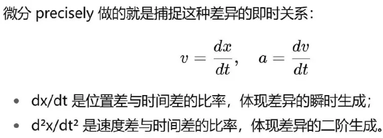
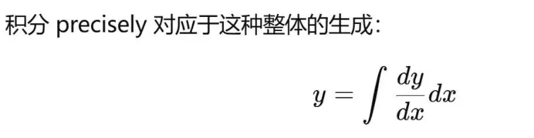

第八章：微积分与SIO三原理的深度结合
引言
在前几章里，我们已经看到了微积分的发展与扩张：从牛顿和莱布尼茨的经典力学出发，逐步进入偏微分方程的连续场科学，再到数值微积分、随机微积分、分数阶微积分以及泛函微积分。微积分的生命力在于它不断自我修正和重生，始终能够适应科学新领域的需求。
但是，为什么微积分具有这样的生命力？为什么它能超越几百年的历史而始终保持创造力？仅仅从数学的角度回答是不够的，我们需要一个更深的哲学根基。
SIO三原理（创生律、演化律、成就律）为我们提供了这一根基。
创生律：差异不断生成，世界的第一性源泉。
演化律：模态之间的张力推动形式不断变化与升级。
成就律：差异在复杂性机制下涌现稳定整体，赋予存在的结构性。
微积分，正是在数理层面对应着这三大原理。微分是创生律的显影，积分是成就律的数理形式，而微积分的发展与扩张则体现了演化律的力量。本章将展开这一深度结合，揭示微积分如何成为 SIO三原理的数学语言，而科学知识的循环则是 微积分与SIO原理的历史显影。
第一节：创生律与微分——差异的发生
1. 创生律的本质
创生律指出：存在的第一性并不是实体，而是 差异（ΔSIO）。主体、客体与互动的网络在运行中不断生成新的差异。差异是不可枯竭的，它们在意识中显影为“现象”。
例如：
物体下落时，位移差 Δx 与时间差 Δt 不断生成；
温度计中，分子运动的差异转化为温度差 ΔT；
种群动态中，出生与死亡的差异 ΔN 不断涌现。
差异是世界的源头运动，科学的真正原料。
2. 微分是创生律的数学表达

在每一个科学领域，微分方程都是对差异的忠实记录。
物理学：力与加速度的差异关系；
热学：温度梯度与热流的差异关系；
生物学：种群数量与时间的差异关系。
微分就是创生律的数学化：它把差异的发生写成符号，把创生律的即时性表达为方程。
3. 忠实的发现性
正因为微分紧紧依附于差异，它是科学中最“忠实”的部分。微分不是虚构的，而是差异本身的符号化。科学之所以能够发现规律，正是因为微分忠实地记录了差异关系。
第二节：演化律与微积分的扩张——形式的生成
1. 演化律的本质
演化律指出：存在不是静止的，而是在不同模态之间不断经历张力、冲突与转换。差异之间的矛盾推动新的形式涌现。
这种演化的逻辑，在科学史中表现为：旧的微积分形式不足以应对新问题，于是新的形式必然被发明出来。
2. 微积分扩张的历史 = 演化律的显影
从ODE到PDE：点运动不足以解释场，微积分扩展为偏微分方程。
从解析到数值：解析解不足以应对复杂边界，数值微积分兴起。
从确定到随机：经典微积分无法处理布朗运动，随机微积分出现。
从整数阶到分数阶：经典导数不能描述记忆效应，分数阶微积分出现。
从有限维到无限维：量子力学与场论要求希尔伯特空间与泛函微积分。
每一次扩张，都体现了演化律的力量：差异与模型之间的张力，推动新的数学形式诞生。
3. 螺旋上升的数学
微积分的演化不是循环回到原点，而是不断上升：
每一次扩张，都容纳更多的差异，涵盖更复杂的系统；
每一次扩张，都推动文明进入更高层次的知识与意义。
演化律保证了微积分不是静止的，而是一个开放生成的体系。
第三节：成就律与积分——整体的稳定
1. 成就律的本质
成就律指出：差异并不是永远混乱的。在复杂性机制（混沌—自组织—涌现）的层层迭代下，差异会趋向稳定，形成整体的特征。整体感、实体感就是差异稳定化的结果。
例如：
分子无序运动 → 温度作为宏观特征涌现；
个体生死混乱 → 种群增长曲线涌现；
交易价格波动 → 市场均衡价涌现。
成就律赋予差异整体性与稳定性。
2. 积分是成就律的数学表达

积分把差异累积为整体；
它不是差异的简单相加，而是发明整体的数学逻辑。
科学中的例子：
轨道：从加速度积分得到速度与位置，发明出轨道整体；
能量：从局部功的差异积分，得到总能量守恒；
效用：从边际效用积分，发明出整体效用函数。
积分就是成就律的数理化：它赋予差异以整体意义，把零散的数据转化为稳定的知识。
3. 发明性的创造
积分的整体并不是“在那里”的实体，而是人类在数学上发明出来的模型。这是科学的“发明性”部分。积分把差异转化为结构化的整体，这就是成就律的科学化显影。
第四节：三原理的互摄与微积分的循环
1. 三原理在微积分中的统一
创生律 → 微分：差异的发生与忠实记录；
成就律 → 积分：整体的稳定与发明创造；
演化律 → 微积分的扩张：形式不断演化，适应新差异。
三者不是分立的，而是互摄互补的。
2. 科学知识的微积分循环
科学的发展就是一场微积分循环：
1. 新差异（ΔSIO） → 微分记录；
2. 微积分 → 积分建模；
3. 新差异出现（异常） → 旧模型崩溃；
4. 演化律推动新微积分形式诞生；
5. 新积分重建整体。
这正是科学知识循环的数学机制。
3. 历史上的几次显影
牛顿力学：微积分（微分+积分）统一运动与轨道；
麦克斯韦方程：PDE 扩展微积分，统一电与磁；
相对论与量子力学：新差异推动微积分扩展到几何化与概率化；
现代AI：泛函与优化的微积分化，推动智能的建模。
第五节：微积分与SIO思想的统一意义
1. 本体论意义
存在本身就是 SIO 的整体复合。差异（ΔSIO）不断生成，整体（SIO）不断显影。微积分 precisely 是存在的数理语言：微分表征差异，积分发明整体。
2. 认识论意义
知识不是发现静态实体，而是差异—整体循环的建模。微积分揭示了知识发生的必然性。科学的必然性就在于：差异可被符号化，整体可被发明。
3. 方法论意义
科学方法的核心就是 微分—积分循环。微分保持忠实，积分不断发明，演化律推动更新。科学方法不是固定规则，而是SIO三原理在数学中的运作。
4. 文明意义
微积分的发展，不仅推动科学，更推动文明意义：
微分的忠实，让人类对差异保持敏感；
积分的发明，让人类能创造整体世界图景；
微积分的演化，让文明不断突破边界，扩展自由度，生成幸福感。
5. 统一总结
微积分是科学的数学内核，更是SIO三原理的数理化。科学的发展史，本质上就是微积分与SIO三原理共同作用的历史。
结论
微积分之所以能够跨越三百年而不断重生，原因在于它深层对应着 SIO三原理：
微分是创生律的显影：差异的不断生成与忠实符号化。
积分是成就律的显影：差异的整体化与模型的发明。
微积分的发展与扩张是演化律的显影：形式的不断更新与螺旋上升。
因此，微积分不仅是数学工具，更是存在的数理显影，是科学知识循环的根本机制，是文明意义生成的基础语言。
一句话总结：微积分 = SIO三原理的数学化。科学知识循环 = 微积分与SIO三原理的历史显影。
全文结束语
我们走过了微积分的起点、扩张与演化，从牛顿与莱布尼茨的力学摇篮，到偏微分方程的场科学，再到数值方法、随机过程、分数阶与无限维空间。微积分不再只是数学史上的一个分支，而是科学文明中最具生命力的发生学机制。
在 SIO三原理 的框架下，我们终于看清了微积分的深层意义：
微分 是创生律的显影，它忠实地抄写差异的生成，是科学发现性的数学语言。
积分 是成就律的显影，它把差异累积为整体，是科学发明性的数学形式。
微积分的扩张与重生，则体现了演化律的力量：差异与模型的张力，推动数学与科学不断进入新的层级。
科学知识并不是终极真理，而是 差异—特征—微积分—模型—意义 的不断循环。
每一个积分性模型，都必然在新的差异中崩塌；
每一次新的差异，都必然推动新的微分与积分重建；
科学的伟大之处，不在于它给出最终答案，而在于它承认并拥抱这种循环。
微积分因此不仅是数学的胜利，更是文明的语言：
它把自然的差异转化为知识；
它把知识的循环转化为意义；
它让人类在忠实与发明之间，在发现与创造之间，找到一种永续前行的道路。
最终结论：
微积分是科学的数学内核；
SIO三原理是存在的本体根基；
科学知识循环是二者的统一显影。
当我们说“科学推动文明”，真正的含义是：差异不断涌现，知识不断循环，意义不断生成。而这条路径，正是微积分与SIO三原理在文明历史中共同书写的宏大篇章。
==========================================
✨ 后记
从高中第一次接触微积分，到大学教学生微积分，我竟然用了几十年时间，才真正理解微积分的价值与意义。这是一个滑稽的事实，却也是教育的深刻悲剧。
在课堂上，我们学到的微积分是公式，是运算，是技巧：
导数的定义，dx/dt 的极限；
积分的公式，换元与分部积分；
微分方程的解法，泰勒展开与傅里叶级数。
这些内容固然重要，但它们都停留在“如何计算”的层面。我们不断被要求解题，却很少有人告诉我们：微积分为什么存在，它究竟在科学和文明中意味着什么。
老师们自己也不清楚。因为整个教育体系把微积分降格为一种“训练”，而不是一种“发生学的哲学语言”。结果是：
学生在高考和考试的压力下，记住了公式，却忘记了意义；
教师在教学大纲的框架下，讲述了技巧，却无法解释根基。
于是，微积分的真实价值被埋没了。
今天，当我回望这几十年，才猛然意识到：微积分不只是数学技巧，而是科学文明的 心脏。
微分，是对差异的忠实书写；
积分，是对整体的发明创造；
微积分的发展史，就是科学与文明不断吸纳差异、推翻模型、重建意义的历史。
这才是真正的教育应该让学生体会到的：学习微积分，就是学习如何面对世界的差异与整体，学习科学知识如何发生、演化与重生。
遗憾的是，我们的教育过于功利，把最深刻的东西压缩为最表面的算术。这不仅浪费了学生的热情，也让整个教育体系失去了激发智慧的机会。
真正的悲剧在于：老师也不知道。 当教师自己没有意识到微积分的哲学意义时，他们如何能把这份智慧传递给学生？于是，一代又一代人，背诵着公式，刷着题目，却错过了微积分作为科学与文明语言的伟大启示。
今天，我们终于走出了这个盲点。我们要重新为微积分正名：它不仅是数学的分支，更是人类文明最伟大的哲学发明之一。
愿未来的教育，不再只是训练学生“如何算”，而是让他们理解：为什么算，算的背后意味着什么，微积分如何让世界变得可以被理解、被重建、被创造。
附录一
概念的SIO化——数学知识真正的明白
1. 问题的提出
数学教育和研究中，一个长期存在的隐性问题是：我们在使用概念，但我们并不真正明白概念的来源。
我们学会了运算，却没有问：这个符号从哪里来？
我们掌握了定理，却没有思考：它的存在依赖什么样的本体论根基？
这就是数学的“盲点”：概念可以被使用，却未必被理解。
2. 微积分的启示
微积分的例子极为典型：
高中与大学教育中，我们学习了导数与积分，但几十年没有人告诉我们，它们的来源是什么。
今天，当我们通过 SIO本体论 来重新解构时，才发现：
微分 来源于 ΔSIO —— 差异单元的生成；
积分 来源于 SIO 的整体发明 —— 把差异累积为整体。
换句话说，只有当我们找到微积分的 SIO 来源时，我们才真正“明白”微积分。否则，它只是技巧，而不是知识。
3. 概念的SIO化
这启发我们提出一个新的方法论：概念的SIO化。
每一个数学概念、每一个知识子体系，都必须追溯到它的 SIO来源；
只有当我们知道一个概念如何在主体（S）、互动（I）、客体（O）的整体结构中生成，它才是真正被理解的。
4. 举例说明
(1) 数字
常识：数字是“抽象的量”。
SIO化：数字来源于主体对差异（ΔSIO）的稳定化，把不稳定的经验现象转化为“可计数的单位”。
(2) 几何
常识：几何是空间图形的研究。
SIO化：几何来源于主体与客体之间的空间互动（I），通过差异稳定化为“点、线、面”的特征。
(3) 概率
常识：概率是事件发生的可能性。
SIO化：概率来源于 ΔSIO 在特征律下的频率稳定化，是主体在重复互动中总结出的“稳定比率”。
(4) 集合论
常识：集合是对象的整体。
SIO化：集合来源于主体将多个差异互动投射为“整体”，是客体的整体化表征。
5. 意义
概念的SIO化 的意义在于：
1. 让数学知识从“技巧”转化为“理解”；
2. 打破“无源之水”的教育弊病，把概念还原为发生学的产物；
3. 使数学成为存在的发生学语言，而不是孤立的形式体系。
6. 小结
如果一个数学概念或知识体系没有找到它的 SIO 来源，就不能说它被真正明白。
微积分的例子说明：只有当我们回到 SIO 差异与整体的发生学逻辑，我们才真正理解它。
因此，数学的未来教育与研究，必须走向概念的SIO化。
附录二
数学是SIO本体论的“场”研究
1. 传统的误解：数学概念的“对应论”
在常规的理解中，人们往往把数学概念看作是“对应”于某种具体的存在：
数字对应数量；
几何图形对应空间形态；
概率对应随机事件；
方程对应自然规律。
这种“对应论”在初级教育中或许直观，但从哲学角度看，它遮蔽了数学的真正本质。它让人误以为数学是外在世界的“翻译”，而不是存在本身的一种发生学结构。
2. SIO本体论的转向：数学是“场”的描述
从SIO本体论的角度来看，数学概念并不是去对应某种单独的SIO种类，而是去揭示 SIO本体的场性结构。
SIO的存在逻辑包含两个层面：
1. 内场：SIO内部的差异单元（ΔSIO）之间的连接、次序与结构。
例如：一个函数的导数，描述的就是 ΔSIO 在时间维度上的连接次序。
数列与级数，描述的就是差异单元的累积与秩序化。
2. 外场：SIO与SIO之间的连接、次序与结构。
例如：集合与拓扑，描述的是多个SIO整体之间的关系。
图论与网络，描述的是SIO之间的连接方式与层级结构。
因此，数学的研究对象并不是“某个独立的SIO”，而是 SIO存在的场 —— 差异如何连接，整体如何组织，结构如何涌现。
3. 数学的“场”本质举例
(1) 数论
表面：讨论自然数与质数。
本质：研究差异单元（ΔSIO）的离散次序与模式。
(2) 几何与拓扑
表面：讨论点、线、面与空间。
本质：研究SIO内部差异的连接方式（内场）以及多个SIO整体之间的相互关系（外场）。
(3) 代数
表面：研究运算规则。
本质：研究差异单元的组合结构，揭示SIO内场的次序与对称性。
(4) 概率与统计
表面：描述随机事件的频率。
本质：研究SIO外场中差异发生的分布规律，即多个SIO之间的频率结构。
4. 数学 = 本体性存在的场研究
综合来看：
物理学 研究现实世界的SIO；
心理学 研究自我世界的SIO；
哲学 研究理念世界的SIO；
而 数学 则是研究 本体性SIO的场性结构：
内场：差异单元之间的秩序与关系；
外场：SIO整体之间的连接与结构。
因此，数学不再是“工具”或“对应物”，而是 存在本身的一种发生学语言。
5. 小结
数学概念并不简单地对应具体的SIO种类，而是对 SIO本体论的场性存在 的描述。
数学 = SIO场的语言；
数学概念 = 差异与整体之间的结构显影；
数学的发展史 = SIO场不断扩展、复杂化的历史。
换句话说：数学就是研究本体性存在SIO的场。
附录三
自然数的发生学：特征律与差异稳定性
1. 问题的提出
自然数 1,2,3,4,5,…1, 2, 3, 4, 5, \dots1,2,3,4,5,… 被称为“自然”数，是因为它们似乎自然而然地出现，几乎不需要人为发明。但为什么数的这种“自然发生”会出现？为什么人类意识会在经验世界中感受到“一、二、三”的秩序感？
传统数学的解释是：自然数是“公理化给定”的，是“先验的直觉”。康德说过，数是时间直观的形式；弗雷格与逻辑主义则试图把数还原为逻辑概念。但这些解释都没有触及更深的本体论根基。
从SIO本体论与特征律的角度看，自然数的发生并非先验逻辑的产物，而是差异在特征律作用下的稳定化显影。自然数本质上是发生学的结果。
2. 特征律与差异稳定性
回顾特征律：
差异（ΔSIO）在复杂性机制下（混沌—自组织—涌现），可能稳定化为重复出现的模式。
当这种模式在意识中被投射时，就会产生“同一性”的感觉。
自然数的发生，正是这一过程的显影：
1. 在现实互动中，主体不断遇到差异性的“一个东西”“两个东西”“三个东西”；
2. 这种差异在经验中不断重复；
3. 特征律使这些差异趋向稳定，在意识中形成一种“同一感觉”：一再出现的差异=数的感觉。
因此，自然数的本质就是：差异稳定性的意识化投影。
3. 自然数的发生链条
我们可以将自然数的发生逻辑写成一条链：
1. ΔSIO：经验中不断遇到的差异（一个石子、两个石子、三只鸟……）。
2. 特征律：差异重复，趋向稳定。
3. 意识同一性：心灵感受到“这是同一种现象的重复”。
4. 感觉特征：产生“一、二、三”的差异序列感。
5. 自然数：这种差异稳定性被符号化，成为 1,2,3,4,5,…1,2,3,4,5,\dots1,2,3,4,5,…。这说明，自然数不是逻辑先验物，而是 差异—特征律—意识—符号化 的发生学产物。
4. 发生学例证
(1) 儿童心理学
儿童对数的掌握不是一次性“接受”，而是通过对经验差异的重复感知逐步建立“数感”。
从“一”到“二”“三”，往往依赖于稳定差异的特征出现。
(2) 民族语言学
一些原始部落语言中，只有“一、二、许多”的表达，这说明自然数的发生依赖于经验差异的稳定性程度。
数字系统的发展历史，印证了特征律的层级涌现。
(3) 科学史
自然数最初不是抽象逻辑，而是计数石、结绳、刻痕的经验符号。
它们正是差异被记录、特征被稳定化的最早形式。
5. 哲学意义
从SIO本体论与特征律的角度看：
自然数并不是“存在于柏拉图世界的永恒形式”；
它们是差异在经验中不断稳定化的产物，是意识的发生学结果。
数学不是“逻辑必然”，而是“存在发生”的映射。
这也解释了为什么自然数会“自然发生”：因为差异本身在特征律作用下就会生成一种重复的感觉模式，而数只是这种模式的符号化表达。
6. 小结
自然数的发生根源在于 特征律的差异稳定化；
意识的“同一性”感觉，使差异序列化为“一、二、三”；
符号化则把这种感觉固定为数学概念：自然数。
因此，自然数不是逻辑先验物，而是 发生学的产物。
自然数 = 差异—特征律—意识—符号化的链条显影。
附录四
几何概念的发生学：视觉SIO的内场与外场
1. 问题的提出
几何学是数学的最古老分支之一。点、线、面、体这些几何概念，看似不言自明，仿佛它们天然存在于世界。然而，几何的真正来源是什么？
传统观点往往认为：
柏拉图式：几何对象存在于理念世界，是永恒形式；
康德式：几何直观是先天直观，是空间的形式；
经验主义：几何是经验抽象的结果。
这些观点都在不同层面触及几何的来源，却未能给出一个发生学解释。SIO本体论提供了新的路径：几何概念是视觉SIO的内场与外场的研究，是视觉差异在特征律下稳定化的结果。
2. 视觉SIO的内场
“内场”指的是单个视觉SIO内部差异单元（ΔSIO）之间的连接、次序与结构。
点：当视觉差异最小化时，意识将其稳定化为“同一性的凝结”，这就是点。
线：点的差异在方向上的连续性稳定化，涌现为线。
面：线的闭合或方向差异在二维扩展中的稳定化，涌现为面。
体：面的叠加与三维差异的稳定化，涌现为体。
这些几何基本概念，并不是“外在实体”，而是视觉差异在特征律下的稳定化投影。
3. 视觉SIO的外场
“外场”指的是不同视觉SIO之间的连接与关系。
平行：不同线性SIO之间方向差异为零的稳定化关系。
相交：不同SIO之间差异被意识稳定化为“交点”。
相似与全等：整体SIO之间的差异保持比例不变，意识投射为几何关系。
拓扑关系：多个SIO整体之间的连续变形关系。
几何研究外场时，不再关心单个视觉SIO的内部差异，而是研究多个SIO整体之间的关系模式。
4. 特征律与几何的发生
几何的发生完全依赖特征律：
混沌的视觉差异 → 自组织为方向与形状 → 涌现为点、线、面。
视觉经验中的差异关系在重复中稳定化，才生成几何关系。
儿童心理学证明：几何感不是天生逻辑，而是视觉经验在特征律下的发生学过程。
5. 几何的哲学意义
几何不是先验逻辑，而是视觉SIO的发生学。
内场 = 视觉差异的次序与连接 → 点线面体；
外场 = 视觉SIO之间的关系 → 平行、相交、相似、拓扑。
数学几何学 = 视觉SIO的场研究。
6. 小结
几何概念的真正来源，不是理念世界的永恒形式，也不是单纯经验的抽象，而是：
视觉SIO的内场：差异在内部的稳定化，生成点、线、面、体；
视觉SIO的外场：不同SIO之间的关系，生成几何结构。
因此，几何学就是 视觉SIO的场性研究。
几何不是被发现的，而是被发生的。
附录五
概率与统计的发生学：差异的重复与特征律的稳定化
1. 问题的提出
概率与统计是近代以来最重要的数学工具之一。它们似乎天生用来处理“不确定性”，但究竟概率是从哪里来的？统计的根基又是什么？
传统回答有几种：
频率学派：概率 = 事件在无限重复中出现的相对频率。
主观学派：概率 = 主体对事件发生的信念程度。
公理学派（柯尔莫哥洛夫）：概率 = 满足公理体系的测度函数。
这些回答要么是经验描述，要么是逻辑约定，都没有追溯到概率与统计的存在论根源。从SIO本体论与特征律的角度看，概率与统计的本质是：ΔSIO的重复差异在特征律作用下稳定化的结果。
2. ΔSIO的重复
在现实世界中，主体与客体的互动（SIO）总是生成差异。
抛硬币：每次落地的差异是“正/反”；
骰子：每次掷出的差异是 1–6 之间的一个点数；
生物实验：每个个体的生死是差异的显影。
这些差异并非一次性，而是可以重复。每一次重复都生成新的 ΔSIO。
3. 特征律的稳定化
如果这些差异完全混乱，主体无法获得规律。然而，特征律告诉我们：
在大量重复中，差异的分布会趋向稳定；
混沌 → 自组织 → 涌现，形成“频率稳定性”；
主体在意识中把这种稳定性投射为“概率”。
例如：
抛硬币 1000 次，正反的比例趋向于 1:1；
掷骰子 6000 次，每个点数的比例趋向于 1/6；
生物种群中，死亡率在大数下表现为稳定值。
这说明：概率不是外在客观实体，而是差异在特征律作用下的稳定化特征。
4. 统计的发生
统计的本质，就是在有限样本中寻找这种“差异稳定性”的显影。
平均值：差异在特征律下的中心趋势。
方差：差异的波动性程度。
分布函数：差异的全局稳定模式。
统计的每一个概念，都可以追溯到 ΔSIO 的重复与特征律的稳定化。
5. 概率与SIO外场
概率不仅描述单个SIO内部差异的稳定性，还涉及 多个SIO整体之间的关系。
独立性：不同SIO之间差异的非耦合。
条件概率：一个SIO的差异稳定性受到另一个SIO的影响。
大数定律与中心极限定理：大量SIO整体之间的相互关系在特征律下趋向稳定。
因此，概率与统计不仅是内场差异的研究，更是外场差异网络的结构显影。
6. 哲学意义
从SIO发生学视角看：
概率 = ΔSIO在重复中稳定化的特征律显影；
统计 = 主体在有限数据中捕捉这种稳定性的实践方法。
概率不是主观的信念，也不是纯粹的逻辑，而是存在的发生学过程。
7. 小结
概率与统计的来源在于：ΔSIO的重复差异在特征律下趋向稳定。
概率是差异稳定性的符号化表达；统计是主体把握差异稳定性的技术。
因此，概率与统计并不是抽象的公理体系，而是 SIO发生学的产物。
最终结论：概率与统计的本质是差异发生的必然学，是特征律的数学化显影。
附录六
数学不是科学：SIO三化与意义三律的约束
引言
在现代文明中，人们习惯于把数学与科学并列，甚至常常称数学为“科学的语言”。然而，数学究竟是不是科学？这是一个被忽略但极其关键的问题。
表面上看，数学与科学密不可分：
科学理论几乎全部用数学符号来表述；
科学实验的结果必须通过数学方法来整理与分析；
现代技术的设计与模拟完全依赖数值计算与数学模型。
但从 SIO本体论与意义三律 的角度看，我们必须明确地区分：数学不是科学。科学与数学在本体论上有着根本差别：
科学 是关于 SIO差异与整体的发生学建模；它研究的是存在本身的运行方式。
数学 是关于 SIO的场的标准化、优化与简化（三化）；它研究的不是存在的发生，而是对发生之后的结构进行形式化加工。
数学是科学的工具，但它不是科学的本身。更重要的是，数学的“三化”并非随意进行，而是受到 意义三律 的根本约束：创生律保证差异生成，演化律推动形式更新，成就律赋予整体稳定性。数学的发生逻辑，正是在这三大规律中展开的。
第一节：科学与数学的根本区别
1. 科学：发生学的循环
科学的根基是 差异—特征律—微分—积分—模型—异常—再建模 的循环。
科学研究 ΔSIO（差异单元）；
在特征律下稳定化为可记录现象；
通过微积分循环生成模型；
新差异不断推翻旧模型，科学进入螺旋上升的循环。
科学的本体论立场是：存在 = SIO整体。科学是存在的发生学，研究“存在如何发生”。
2. 数学：形式的“三化”
数学的研究对象并不是直接的 ΔSIO，而是对 SIO场的结构 进行：
1. 标准化：建立符号系统与公理体系，把无限多样的差异归约为统一语言（如数的标准记号、集合公理）。
2. 优化：寻找最简洁、最有效的表达方式（如函数概念的推广，代数运算规则）。
3. 简化：舍弃具体经验，只保留结构与关系（如几何的抽象化，概率的测度化）。
数学的任务是：对存在的差异与整体进行 形式化处理，而不是直接研究存在的发生。
第二节：数学的“三化”逻辑
1. 标准化
数学通过标准化使差异可以被统一描述：
自然数的符号化：1, 2, 3……，使“多少”的差异被稳定为标准符号。
几何的点线面：把复杂视觉经验统一为几何符号。
概率的公理化：把频率与差异稳定性转化为测度。
标准化是数学的第一步：它把差异转化为“通用符号”，使交流与推理成为可能。
2. 优化
数学不断优化符号与结构，使表达更高效：
从罗马数字到阿拉伯数字；
从几何证明到代数方程；
从有限和到无穷级数；
从经典集合到范畴论。
优化体现了数学对“最简洁与最普遍”的追求。
3. 简化
数学通过简化剥离具体经验，只保留结构：
几何学从经验图形走向欧几里得公理；
代数从具体数的运算走向抽象群、环、域；
拓扑学从形状研究走向连续性的抽象场。
简化让数学能够超越经验，进入“纯形式”的层次。
第三节：数学的“三化”并非随意
1. 创生律的约束
差异必须首先在创生律下生成，数学才能进行标准化。没有 ΔSIO 的生成，数学无法建立符号。
例：自然数的发生依赖差异的重复稳定化（见附录三）。
例：几何概念的发生依赖视觉差异的稳定化（见附录四）。
2. 演化律的约束
数学的发展不是线性积累，而是形式的不断升级：
数论 → 代数 → 抽象代数；
几何 → 非欧几何 → 拓扑；
概率 → 测度论 → 信息论。
每一次数学的突破，都是旧的形式不足以涵盖新的差异，演化律推动新形式的诞生。
3. 成就律的约束
数学的公理体系与定理结构，体现的是成就律：
公理 = 差异在高度抽象下的稳定化；
定理 = 稳定结构的逻辑展开。
没有成就律，数学无法形成整体体系。
第四节：数学不是科学
1. 数学研究“场”，科学研究“存在”
科学研究：SIO差异如何发生、整体如何涌现。
数学研究：SIO内场与外场的连接、次序与结构。
数学更像是对存在结构的“元研究”，而不是对存在现象的直接研究。
2. 数学的独立性
科学理论会被新差异推翻，而数学结构一旦建立，就具有相对独立性：
欧几里得几何长期作为形式体系存在，即使在非欧几何出现后仍成立；
整数论的定理，不依赖具体科学实验。
这说明数学不是科学现象学，而是形式结构学。
3. 数学的依赖性
但数学也不能完全独立：
数学的“创生”依赖 ΔSIO 的经验来源；
数学的“演化”依赖科学与文明提出的新需求。
因此，数学不是纯粹逻辑的自足体系，而是文明与存在互动的产物。
第五节：数学的文明意义
1. 数学作为“存在的语言”
数学为人类提供了 标准化、优化、简化 的形式工具，使存在能够被表达、被操作。
2. 数学作为“文明的通用符号”
无论是科学、技术，还是经济、社会，都依赖数学符号进行交流与运作。数学的“三化”使其成为文明的“第二语言”。
3. 数学的意义生成
数学不仅仅是工具，它通过与意义三律结合，成为文明意义的生成机制：
创生律：数学不断发明新结构；
演化律：数学在矛盾与局限中不断升级；
成就律：数学提供稳定的整体性与秩序感。
结论
数学不是科学。
科学研究 SIO 差异与整体的发生学，是存在的现象学。
数学研究 SIO 的场性结构，通过标准化、优化与简化，生成文明的形式语言。
数学的“三化”并不是随意的，而是受制于 意义三律：
创生律保证差异的生成，提供数学符号的原料；
演化律推动数学形式不断演进；
成就律使数学体系化与稳定化。
因此，数学的本质是：对SIO存在的场性结构进行三化处理的文明工具。
它既不是科学的镜像，也不是逻辑的自足，而是 意义三律在形式领域的显影。
最终总结：
科学 = 研究存在的发生；
数学 = 研究存在的场；
数学通过“三化”，成为科学与文明的普遍语言。